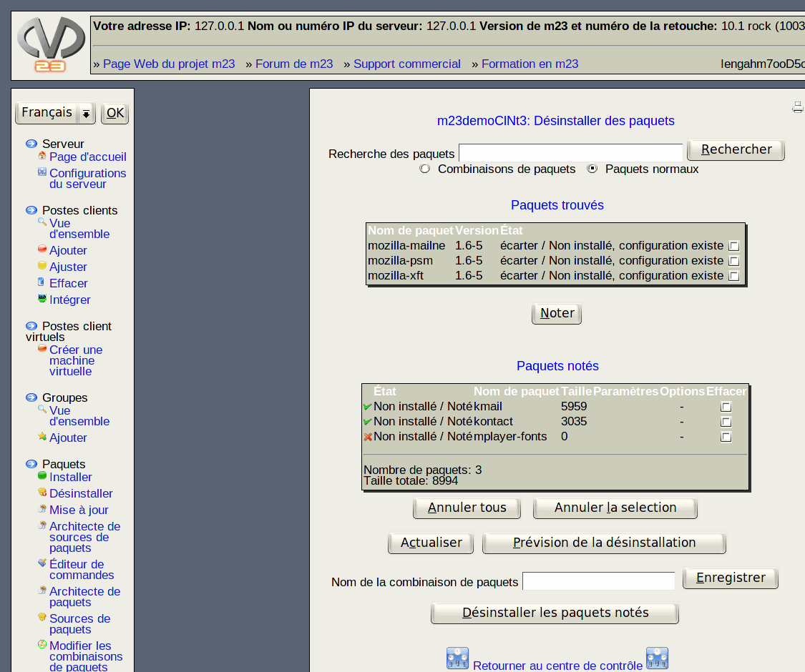

suivant:
Notez
monter:
Paquets
précédent:
CONSEIL:
Table des matières
Désinstaller des paquets
Dans ce dialogue, vous avez la possibilité d'effacer des paquets de vos postes client.

Sous-sections
Notez
Désinstaller des paquets:
Prévisualisation de la désinstallation
root 2015-09-06